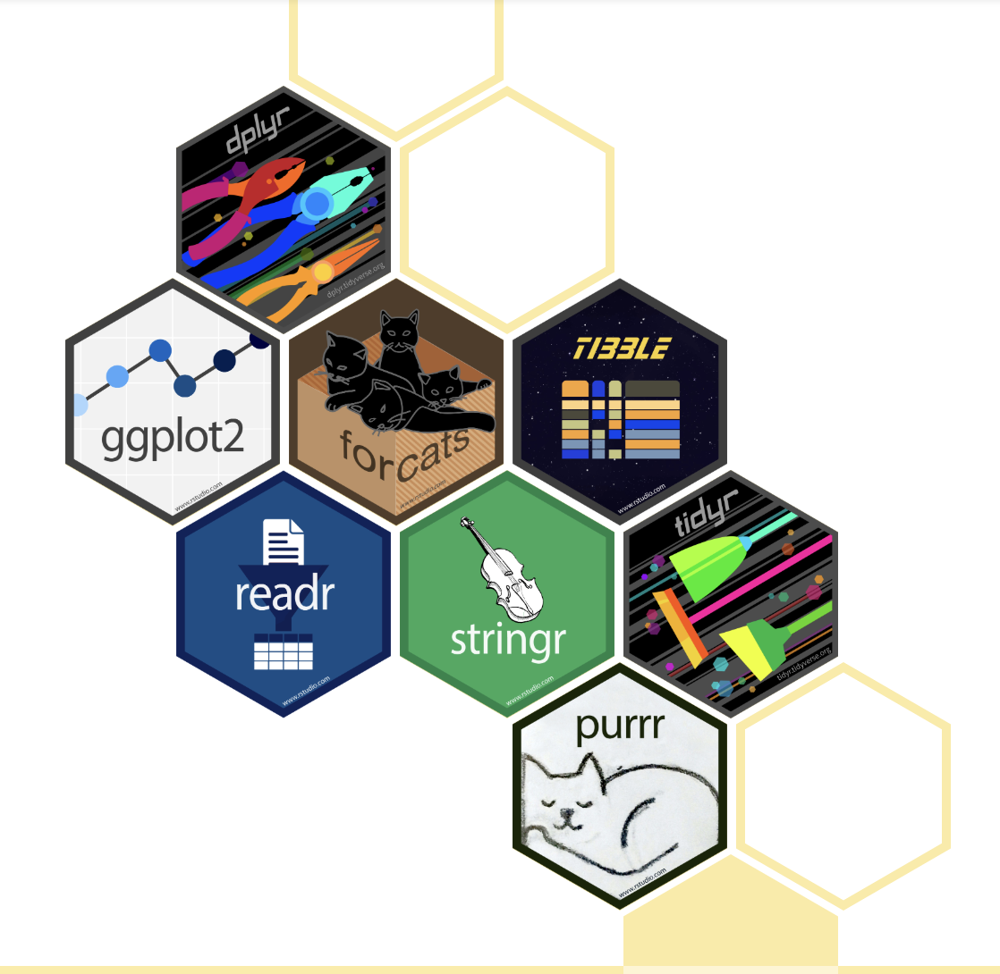
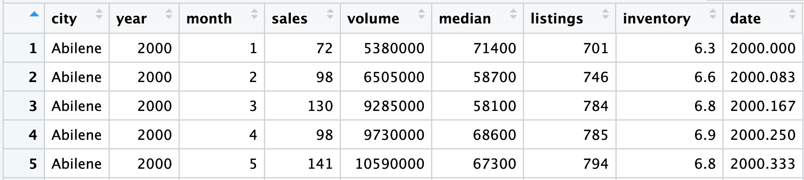
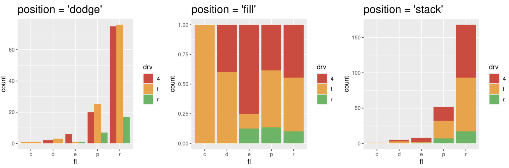

Graphics with ggplot2
Monday, April 6
Today we will…
- Group Quiz (15 min)
- Style Note of the Day
- New Material
- Welcome to the Tidyverse
- Graphics with
ggplot2 - Game Planning
- PA 2: Using Data Visualization to Find the Penguins
Style Note of the Day - Function Calls
Tip
Name arguments in function calls
Only include necessary arguments! (If you are using any default values, no need to repeat them in your function call.)
Good
Welcome to the Tidyverse
Tidywho?
The tidyverse is an opinionated collection of R packages designed for data science. All packages share an underlying design philosophy, grammar, and data structures.1

- Most of the functionality you will need for an entire data analysis workflow with cohesive grammar
Core Packages
The tidyverse includes functions to:
| Read in data | readr |
| Visualize data | ggplot2 |
| Manipulate rectangular data | tidyr, dplyr, tibble |
| Handle special variable types | stringr, forcats , lubridate |
| Support functional programming | purrr |
Tidyverse and STAT 331
This version of the course will primarily use tidyverse packages and grammar
Reasoning:
- the tidyverse is as reputable and ubiquitous as base
Rat this point (in my opinion) - the tidyverse is specifically designed to help programmers produce easy-to-read and reproducible analyses and to reduce errors
- there is excellent documentation!
- I like it!
- the tidyverse is as reputable and ubiquitous as base
Using the tidyverse package
Installing/loading the
tidyversepackage installs/loads all of the “tidyverse” packagesAvoid redundantly installing or loading packages!
Graphics with ggplot2
Why Do We Create Graphics?
Grammar of Graphics
The Grammar of Graphics (GoG) is a principled way of specifying exactly how to create a particular graph from a given data set. It helps us to systematically design new graphs.
Think of a graph or a data visualization as a mapping…
FROM variables in the data set (or statistics computed from the data)…
TO visual attributes (or “aesthetics”) of marks (or “geometric elements”) on the page/screen.
Components of Grammar of Graphics
data: dataframe containing variablesaes: aesthetic mappings (position, color, symbol, …)geom: geometric element (point, line, bar, box, …)
stat: statistical variable transformation (identity, count, linear model, quantile, …)scale: scale transformation (log scale, color mapping, axes tick breaks, …)coord: Cartesian, polar, map projection, …facet: divide into subplots using a categorical variable
Aesthetics
We map variables (columns) from the data to aesthetics on the graphic useing the aes() function.
Geometric Objects
We use a geom_xxx() function to represent data points.
one variable
geom_bar()geom_density()geom_histogram()geom_boxplot()
two variable
geom_boxplot()geom_point()geom_line()
Tip
See ggplot2 cheat sheet for more!
How to Build a Graphic
To create a specific type of graphic, we will combine aesthetics and geometric objects.
Complete this template to build a basic graphic:
- Every
+to adds another layer to a graphic.
Practice 🧩
Start with TX housing data.

Make a plot of median house price over time, distinguishing between different cities.
Global v. Local Aesthetics 🧩
Global Aesthetics
Mapping v. Setting Aesthetics 🧩
Mapping Aesthetics
Faceting
Extracts subsets of data and places them in side-by-side plots.
Faceting - details
Extracts subsets of data and places them in side-by-side plots.
facet_grid(cols = vars(b)): facet into columns based on bfacet_grid(rows = vars(a)): facet into rows based on afacet_grid(rows = vars(a), cols = vars(b)): facet into both rows and columnsfacet_wrap(vars(b)): wrap facets into a rectangular layout
You can set scales to let axis limits vary across facets:
"fixed"– default, x- and y-axis limits are the same for each facet"free"– both x- and y-axis limits adjust to individual facets"free_x"– only x-axis limits adjust"free_y"– only y-axis limits adjust
You can set a labeller to adjust facet labels.
Include both the variable name and factor name in the labels:
facet_grid(cols = vars(b), labeller = label_both)
Position Adjustements
Position adjustments determine how to arrange geom’s that would otherwise occupy the same space.
position = 'dodge': Arrange elements side by side.position = 'fill': Stack elements on top of one another + normalize height.position = 'stack': Stack elements on top of one another.position = 'jitter": Add random noise to X & Y position of each element to avoid overplotting (seegeom_jitter()).
Position Adjustments

Plot Customizations
Formatting your Plot Code
It is good practice to put each geom and aes on a new line.
- This makes code easier to read!
- Generally: no line of code should be over 80 characters long.
ggplot2 can basically do anything!
- imagine the graphic you want to make, and the support exists for you to make it!
Some general resources:
Making your exact graphic:
PA 2: Using Data Visualization to Find the Penguins

Artwork by Allison Horst
Collaborative Protocol
During your collaboration, your group will alternate between three roles:
- Reads out the prompt and ensures the group understands what is being asked.
- Manages resources (e.g., cheatsheets, textbook).
- Answers Coder’s questions about syntax based on the resources.
- Works with the group to debug the code.
- Encourages the Coder to vocalize and explain their thinking.
- Types the code specified by the Coder into the Quarto document.
- Runs the code provided by the Coder.
- Works with group to debug the code.
- Evaluates the output against the question prompt.
- Confirms they understand what the prompt is asking.
- Talks with the group about their ideas.
- Explains their thinking.
- Directs the Computer what to type.
- Works with the group to debug the code.
Submission
- When you have completed the puzzle, you will submit the name of the poem on Canvas.
- You can ask me if it is correct before you submit
- The person who was the last to be the computer will submit your .qmd to Canvas for the whole group.
Starting Roles Today
The person whose family name starts first alphabetically starts as the project manager, second as the computer.